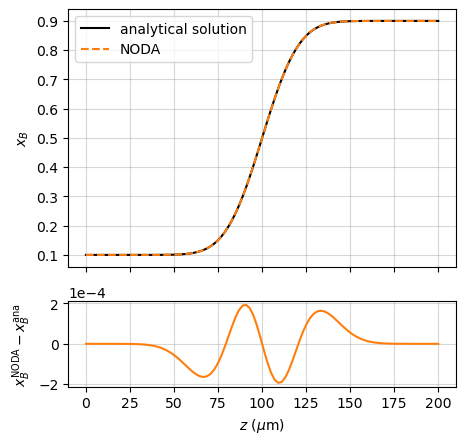
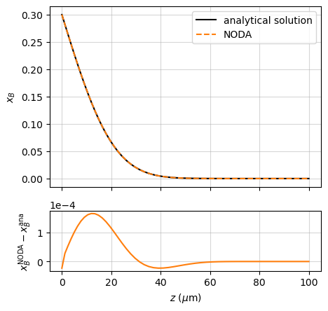
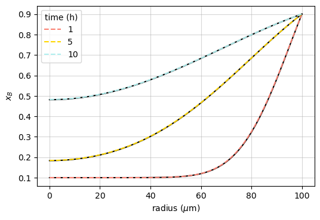

Working with model systems
Users can easily explore the effects of thermodynamic and diffusion properties on the shape of concentration profiles by creating their own database files. The examples below shows how the known solution to the diffusion problem is recovered when the system properties follow a particular set of constraints.
Let us consider a single-phase binary system AB, where the partial molar volumes of A and B are equal (therefore the average molar volume is composition-independent). In 1D, the diffusion problem may be written in the following form:
This problem has analytical solutions when the interdiffusion coefficient is constant — in this case:
If A and B are both substitutional constituents of a disordered phase, the interdiffusion coefficient is given by Darken’s formula:
where \(\phi\) is the thermodynamic factor:
The simplest way for \(\tilde{D}\) to be composition-independent is that the system follows the following set of conditions:
AB is an ideal solution: \(\mu_B = \mu_B^0 + RT\ln{x_B}\), which yields \(\frac{\partial \mu_B}{\partial x_B} = \frac{RT}{x_B}\) and \(\phi = 1\);
A and B have equal diffusivities: \(D_A^* = D_B^*\);
The diffusivities are composition-independent: \(D_B^* \neq f(x_B)\).
This yields \(\tilde{D} = D_B^*\).
These conditions are fulfilled for the model AB system provided in the test base, with databases named “AB_thermo_ideal” and “AB_mob_ideal”.
A number of diffusion problems involving a binary system with composition-independent molar volume and diffusivity have analytical solutions. Some typical initial distributions and boundary conditions are illustrated below.
Diffusion couple (planar geometry)
In the case of an infinitely-thick planar diffusion couple:
the analytical solution to the diffusion problem is ([Crank_1975], p. 14):
This is compared with the Noda simulation in the example named “couple_AB”:
[databases]
thermo = "AB_thermo_ideal"
mobility = "AB_mob_ideal"
[system]
components = "A, B"
phases = "fcc"
[temperature]
TC = 1000
[time]
th = 1
[space]
zmin = 0
zmax = 2e-4
nz = 100
[initial_conditions]
[initial_conditions.atom_fraction]
shape = "step"
step_fraction = 0.5
left.B = 0.1
right.B = 0.9
[boundary_conditions]
[boundary_conditions.left]
flux.A = 0
flux.B = 0
[boundary_conditions.right]
flux.A = 0
flux.B = 0
[options]
L_mean_kind = 'harmonic'
import numpy as np
from scipy.special import erfc
import matplotlib.pyplot as plt
from noda import simu
s = simu.NewSimulation(file='couple_AB.toml')
s.run()
#%% Comparison with analytical solution
x_left = s.initial_conditions.x['B'][0]
x_right = s.initial_conditions.x['B'][-1]
x_any = np.array([[0.5]])
D = s.mobility.DT_fun(x_any)['B']
r = s.results[-1]
zmid = (r.z[-1] + r.z[0])/2
x_ana = x_right + (x_left - x_right)*0.5*erfc((r.z - zmid)/np.sqrt(4*D*s.time.ts))
fig, (ax1, ax2) = plt.subplots(nrows=2, ncols=1,
figsize=(5, 5),
gridspec_kw={'height_ratios': [3, 1]})
ax1.plot(r.z*1e6, x_ana, 'k', label='analytical solution')
ax1.plot(r.z*1e6, r.x['B'], '--', c='tab:orange', label='Noda')
ax1.set_ylabel('$x_B$')
ax1.set_xticklabels([])
ax1.legend()
ax1.grid(visible=True)
ax2.plot(r.z*1e6, r.x['B'] - x_ana, c='C1')
ax2.set_xlabel(r'$z$ ($\mu$m)')
ax2.set_ylabel(r'$x_B^\mathrm{Noda} - x_B^\mathrm{ana}$')
ax2.grid(visible=True)
# plt.savefig('couple_AB.png', bbox_inches="tight", dpi=100)
#%% Validation
assert np.allclose(r.x['B'], x_ana, atol=1e-4)
{kind=link}

Constant surface concentration (planar geometry)
In the case of a semi-infinite solid initially at a uniform concentration \(x_B^\mathrm{bulk}\), with its left-hand surface maintained at a constant concentration \(x_B^\mathrm{surf}\):
the solution reads ([Crank_1975], p. 32):
This is compared with the Noda simulation in the example named “source_AB”, which illustrates the use of a geometric grid, well suited to the Dirichlet boundary condition:
[databases]
thermo = "fcc-AB-thermo-ideal.csv"
mobility = "fcc-AB-mob-ideal.csv"
molar_volume = {'A' = 1e-5, 'B' = 1e-5}
[system]
components = "A, B"
phases = "fcc"
[temperature]
TC = 1000
[time]
th = 1
[space]
grid_type = "geometric"
q = 1.02
zmin = 0
zmax = 1e-4
nz = 60
[initial_conditions]
[initial_conditions.atom_fraction]
shape = "flat"
left.B = 1e-4
[boundary_conditions]
left.atom_fraction.B = 0.3
[options]
L_mean_kind = "geometric"
import numpy as np
from scipy.special import erfc
import matplotlib.pyplot as plt
from noda import simu
s = simu.NewSimulation(file='source_AB.toml')
s.run()
#%% Comparison with analytical solution
x_bulk = s.initial_conditions.x['B'][0]
x_surf = s.boundary_conditions['left'].x_fun(0)[0]
x_any = np.array([[0.5]])
D = s.mobility.DT_fun(x_any)['B']
r = s.results[-1]
x_ana = x_bulk + (x_surf - x_bulk)*erfc(r.z/np.sqrt(4*D*s.time.ts))
fig, (ax1, ax2) = plt.subplots(nrows=2, ncols=1,
figsize=(5, 5),
gridspec_kw={'height_ratios': [3, 1]})
ax1.plot(r.z*1e6, x_ana, 'k', label='analytical solution')
ax1.plot(r.z*1e6, r.x['B'], '--', c='tab:orange', label='Noda')
ax1.set_ylabel('$x_B$')
ax1.set_xticklabels([])
ax1.legend()
ax1.grid(visible=True)
ax2.plot(r.z*1e6, r.x['B'] - x_ana, c='C1')
ax2.set_xlabel(r'$z$ ($\mu$m)')
ax2.set_ylabel(r'$x_B^\mathrm{Noda} - x_B^\mathrm{ana}$')
ax2.grid(visible=True)
# plt.savefig('source_AB.png', bbox_inches="tight", dpi=100)
#%% Validation
assert np.allclose(r.x['B'], x_ana, atol=2e-4)
{kind=link}

Constant surface concentration (spherical geometry)
If a sphere of radius \(R\) is initially at a uniform concentration \(x_B^\mathrm{bulk}\), and its surface is maintained at a constant concentration \(x_B^\mathrm{surf}\), the concentration at distance \(r\) from the center is ([Crank_1975], p. 91):
This is compared with the Noda simulation after different diffusion times in the example named “sphere_AB”:
[databases]
thermo = "AB_thermo_ideal"
mobility = "AB_mob_ideal"
[system]
components = "A, B"
phases = "fcc"
[temperature]
TC = 1000
[time]
th = 10
nt_multiplier = 1.2
num_out = 11
[space]
geometry = "spherical"
zmin = 0
zmax = 1e-4
nz = 61
[initial_conditions]
[initial_conditions.atom_fraction]
shape = "flat"
left.B = 0.1
[boundary_conditions]
left.flux.B = 0
left.flux.A = 0
right.atom_fraction.B = 0.9
import numpy as np
import matplotlib.pyplot as plt
from noda import simu
def analytical_solution(r, R, D, ts, x_bulk, x_surf, N=100):
f = 1 + 2*sum(((-1)**n)
* np.divide(R*np.sin(n*np.pi*r/R), np.pi*n*r,
out=np.ones(r.size), where=(r!=0))
* np.exp(-D*n**2*np.pi**2*ts/R**2)
for n in range(1, N))
x = x_bulk + (x_surf - x_bulk)*f
return x
s = simu.NewSimulation(file='sphere_AB.toml')
s.run()
#%% Comparison with analytical solution
x_bulk = s.initial_conditions.x['B'][0]
x_surf = s.boundary_conditions['right'].x_fun(0)[0]
R = s.space.zmax
r = s.space.z_init
x_any = np.array([[0.5]])
D = s.mobility.DT_fun(x_any)['B']
th_targets = [1, 5, 10]
colors = ['salmon', 'gold', 'paleturquoise']
fig, ax = plt.subplots()
for th_target, c in zip(th_targets, colors):
th = s.time.saved_th[np.argmin(abs(th_target - s.time.saved_th))]
res = s.result(th=th)
x_ana = analytical_solution(r, R, D, th*3600, x_bulk, x_surf)
ax.plot(r*1e6, x_ana, 'k')
ax.plot(r*1e6, res.x['B'], '--', c=c, label=f"{th:.0f}")
ax.set_xlabel(r'radius ($\mu$m)')
ax.set_ylabel('$x_B$')
ax.legend(title='time (h)')
ax.grid(visible=True)
fig.set_dpi(200)
# plt.savefig('sphere_AB.png', bbox_inches="tight", dpi=100)
#%% Validation
assert np.allclose(res.x['B'], x_ana, atol=2e-3)
{kind=link}

References